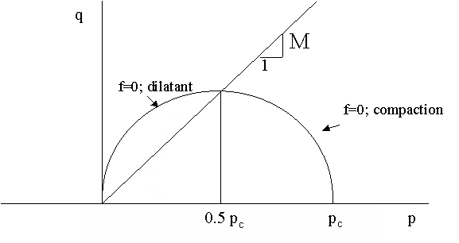
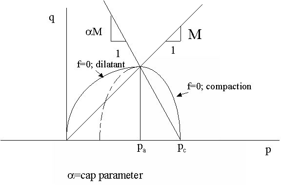
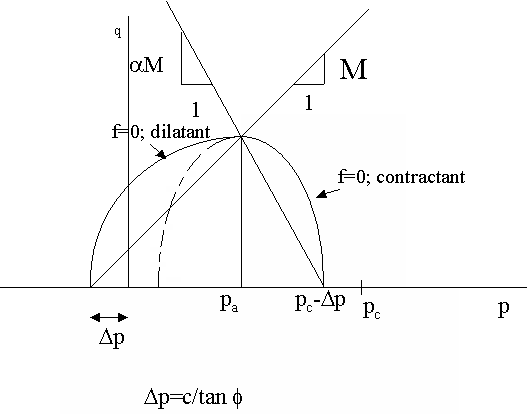
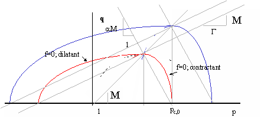
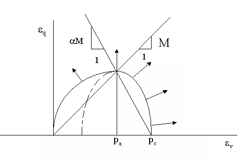
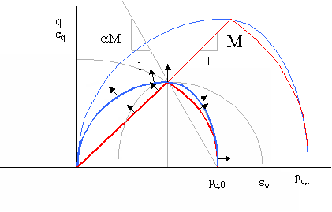

The Cam-clay material model is an integrated model which describes both compaction and dilation depending on the stress state and material parameters. Like the Modified Mohr-Coulomb model Cam-clay is written in p-q space.
The general p-q definition is according to Equation 1, expressed in principal stresses. The shear stress q is also called the Von Mises (equivalent) shear stress.
[Equation 1]
Cam-clay is a model which has been derived for clay like behaviour, i.e. where (non-linear) compaction and decompaction (dilatancy) are very important.

Figure 1: Basic Cam-clay failure curve (cohesion c = 0; shape factor a = 1)
Under triaxial loading, not only the isotropic component p [ = (sax+2srad)/3 ] contributes to the deformation, but also the deviator component q [ = (sax-srad) ].
For normal Cam-Clay behaviour it is assumed that the deviator q contributes to the onset of plasticity. Plasticity is invoked when the deviator strain reaches a critical combination of confining stress p and consolidation stress pc. For a cohesionless material, the formula for the onset of plasticity (see Figure 1) is:
(c = 0)
[Equation 2]
M is related to the common Mohr-Coulomb shear failure for cohesionless materials. It can be expressed as:
or
[Equation 3]
M will hence normally be in the range 0.57 (f = 15°) to 1.64 (f = 40°)
Important note:
Standard Cam-clay models do not have a cohesion parameter. Cohesion and friction are more or less blended, in the sense that stress levels (q > Mp) can exist that are not possible in the Modified Mohr-Coulomb equivalent. Omission of the cohesion is hence not a big omission, unless true tensile stresses are applied to the material (p < 0), which cannot be handled by Cam-clay.
This model is a special case of the Egg model, which will be elaborated upon below.
A more sophisticated version of the Cam-clay model is called the Egg or Modified Cam-clay model. The compressive shape can be stretched or condensed, given higher or lower influence of the shear stress on reaching plasticity. Most materials (sandstones, clays) can be fitted better with an extra cap (a) parameter, usually ranging from 0.5 to 2. For (seemingly) cohesionless materials, the Modified Cam-clay plasticity equation (see Figure 2) reads:
[Equation 4]
which simplifies to the basic Cam-clay model if a = 1. The two halves of the curve match both in level and in derivative at the crest which makes the model easier to handle numerically that the intersecting caps of the Modified Mohr-Coulomb model. The maximum shear stress (at q = Mp; p = pa) can be independently changed from the isotropic consolidation pressure (at q = 0; p = pc).

Figure 2: Cam-clay Egg or Modified Cam-clay failure curve (cohesion c = 0; shape factor a > 1)
The failure (onset of plastic deformation) curve for q = 0 again occurs both at p = 0 (tension) and p = pc.
Two methods exist to introduce cohesion or rather tensile strength. The only available method in Geomec 3.3.3 and earlier is implemented as a p-shift of the failure curve towards the tensile regime. The updated plasticity curve is written as:
[Equation 4a]
[Equation 5a]
The basic disadvantage is that the compressive side of the equation shifts to the left (tensile) side too and that we should modify the cap parameter α, the pre-consolidation pressure pc,0 and the friction angle f to match the compressive side once more. Besides, the hardening parameter λ (see paragraph Deformation) must change to reflect the changed preconsolidation pressure. All parameters from external fitting to the Cam-clay model become useless and need be refitted !

Figure 2a: Cam-clay Egg failure curve with cohesion (p) shift (cohesion c > 0; shape factor a > 1)
A second option (available from Geomec 3.4 on) is to stretch the tensional side, with a multiplication factor Γ (Capital gamma), being greater than 1. With Γ = 1, the model simplifies to Equation 4 for Modified Cam Clay.
[Equation 4b]
[Equation 5b]
This model has the advantage of keeping the compressional part intact, whilst introducing tensile strength. An additional advantage is the limited dilation and softening of the material at high shear stresses, being much more stable in numerical routines. A small disadvantage is the mechanical insignificance of the parameter gamma, and the possible physically obscure increase of the cohesion (tensile strength) with compaction.
For most reservoir depletion cases we however are not very interested in load cases in the tensile regime. Most physical loading will be in the compressional and shear region, which are least affected. The stability of this model probably is however the most important argument to use it, where the introduced error is likely to be small.

Figure 2b: Cam-clay Egg failure curve with tensile stretch (Geomec 3.4 and further)
Cam Clay is a model derived for Clay like behaviour, i.e. where (non-linear) compaction and decompaction are very important, along with Mohr Coulomb failure criteria. It assumes a logarithmic relationship between total plastic volumetric strain and the consolidation pressure. For isotropic compression the compaction formula is:
[Equation 6]
[Equation 7]
in which:
ev total volumetric strain (- or m3/m3)
evp plastic volumetric strain (- or m3/m3)
pc,0 the preconsolidation pressure (MPa) (onset of non-elastic deformation),
p = pc = isotropic stress or isotropic stress equivalent (MPa)
n0 the initial porosity at p=pc,0 (-)
l the plastic material hardening parameter (-)
K Elastic bulk modulus (MPa)

Figure 3: Deformation components plotted in p-q space. Strain increments are the Von-Mises shear strain and volumetric strain
The yield criterion for Cam-clay is defined as the specific set of stresses and strains where plastic deformation (compaction, shear deformation and/or dilation) takes place. The yield criterion is:
[Equation 8]
[Equation 8a]
The parameter pc is the isotropic loading at which yielding (non elastic compaction) occurs. This value pc depends on the initial overconsolidation (pc,0) and on the plastic volumetric strain during compaction (hardening) or decompaction (softening).
If the yield criterion is not met (f < 0) the material behaves elastically. Stress combinations giving rise to values of f > 0 are not possible (either compaction increases the consolidation pressure or the shear stress must decrease, so f remains 0). The Geomec/ Diana calculations are focused to keep the value of f at 0 during plastic deformation, which implies that the rate of stress change is in line with the rate of hardening (or softening).
The Cam-clay model is an associated plasticity model, i.e. the deformation potential g is identical to the yield potential f. The strain tensor is hence perpendicular to the yield-curve (see Figure 3). The plastic strain is tensor is hence directly related to the plastic stress tensor. At stresses of q = Mp, the deformation mechanism is pure shear (i.e. no dilation and no compaction). At (relatively) higher shear stresses the deformation becomes dilatant (also called dry with reference to the water absorbent behaviour of clay here); at lower shear stresses the deformation becomes compacting (also called wet with reference to the water expelling behaviour of clay here).
In general the shear and compression relations can be written as the derivative of g to p and q, mainly to determine a relation between the shear and volumetric strain:
[Equation 9]
The primary strain increments have to be decomposed from the Von Mises and volumetric strain contributions. For triaxial conditions this renders:
[Equation 10]
The c (MPa –1) factor depends on the stress state and hardening conditions and can be related to a discrete change in the stress tensor, fulfilling the requirements of Equations 1 to 10 to arrive at the general incremental stress-strain relation, required for FE-calculations:
[Equation 11]
This is the input for the general stress-strain change relation:
[Equation 12]
with indices e for elasticity, c for creep, and p for plasticity.
PS The C above is a matrix, unrelated to compaction coefficients !
E and n (Young’s modulus [MPa] , Poisson’s ratio [-])
Elastic parameters, which determine elastic shear and bulk response. The values should be derived from unloading tests, assuming the absence of plasticity here. The option to use a non-linear elastic parameter k is not yet available. Will probably be so in version 3.5 (planned Q1-2007)
n0 (initial porosity [-])
Initial porosity at the onset of plastic deformation (pc=pc,0). Note that only the product (1-n0)l is used in Cam Clay. Variation at the same product value will not render different results !
f (friction angle [degrees])
The friction angle [degrees or °] is used to calculate the M-parameter according to:
or
c (cohesion [MPa])
The cohesion c [MPa] shifts the Cam-Clay curve to the left by Δp=[c /tan f]. This generates an elastic behaviour at (effective) tensile stresses. This also implies that the initiation of compressive plasticity is reduced by [c /tan f], i.e. plasticity starts at p = pc,0 – c /tan f.
Advised is to put the cohesion at zero, and use the tensile stretch, or fit all parameters with the Geomec calibration routine.
Γ (tensile stretch [-])
The stretch factor Γ (if >1) elongates the dilatant part of the plasticity curve by a factor Γ, without disturbing the compressive part. Practical values where the actual tensile behaviour is of little relevance are from 5 to 50. Usually considered the better option (over applying a cohesion) to prevent dilatant softening and perhaps non-stable calculations.
a (shape parameter [-] )
The shape parameter determines the shape of the yield and deformation function in p-q space and lies normally between 0.5 and 2. See also Equation 9.
l (hardening parameter [-] )
The elasto-plastic hardening parameter determines the plastic volumetric strain hardening at compaction (or softening at decompaction) and can be derived from Equation 1. Note that only the product (1-n0)l is used in Cam Clay. Variation at the same product value will not render different results !
pc,0 (preconsolidation pressure [MPa])
The preconsolidation pressure is the onset of plastic deformation, assuming an isotropic loading and/or and equivalent according to Equations 2 or 4. The preconsolidation pressure should be always higher than the initial equivalent (f<0), assuming the reservoir and over/underburdens are in a state of elasticity at the onset of depletion.
The preconsolidation pressure reflects a geological early period of higher effective stresses or a period of (slow) consolidation creep.
The preconsolidation pressure does not vary with depth (as might be important in relatively thick layers). It can be modified to depend on depth using the RPN Calculator however or by applying a pointset..
SHtot/Svtot; Shtot/Svtot, SHtot-azimuth
Initial stress field (after gravity loading). SHtot/Svtot [-] is the highest horizontal/vertical stress ratio. SHtot-azimuth [degrees] is the clockwise angle (degrees) between the SHtot direction and the Northing. Shtot/Svtot is the lower minimal stress ratio [-], perpendicular to SHtot direction
r (density [kg / m3])
Bulk density for gravitational calculations.
av (Volumetric Thermal Expansion Coefficient [°C-1 or K-1]
Relative volumetric expansion per degree temperature change. The value is three times the linear expansion coefficient, sometimes provided for solids.
To match experimental test results with parameter data, the user may import the test file in the Material database (via an Excel or text file). The test results will appear as crosses.
By pressing the compare button Geomec will try and find the best (7) parameter set to match the laboratory data. However, Geomec is likely to find a local minimum in obtaining a least-square error fit, not satisfying the best solution.
A best practice could be:
The difference between the Cam Clay and Modified Mohr Coulomb model is shown in figure 4. The main distinction is the sharp edge / switch between the contractant and dilatant regime for the Modified Mohr Coulomb regime. Note that for dilatancy at low confining pressures, Cam-Clay may overestimate the shear capacity.

Figure 4: MMC vs Cam-clay for two sets of consolidation pressures